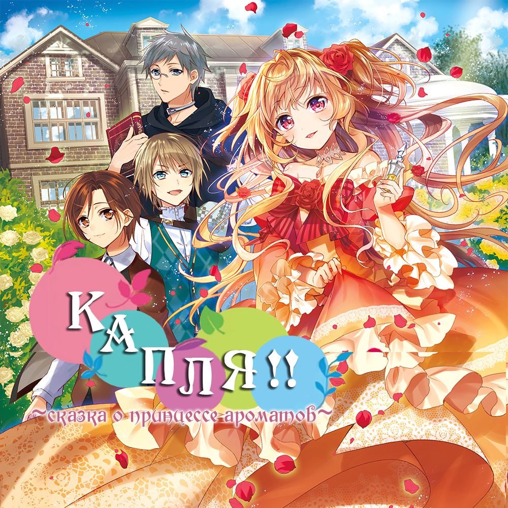

Капля ~Сказка о принцессе ароматов~

Японское наименование: ドロップ！！ ～香りの令嬢物語
Английское наименование: -
Автор: Шисуй Юрико
Издательство: Syosetu
Вид: Вэб-новелл
Статус: Продолжается
Перевод с японского: Freson
Английское наименование: -
Автор: Шисуй Юрико
Издательство: Syosetu
Вид: Вэб-новелл
Статус: Продолжается
Перевод с японского: Freson
Аннотация: Переступив грань между жизнью и смертью, Корделия поняла, что переродилась в трёхлетнюю благородную леди из отомэ-игры, в которую играла в прошлой жизни. Если она влюбится в принца, её ждёт тёмное будущее. Чтобы этого не случилось, девушка решает избегать встреч с принцем и главной героиней. Однако, это довольно скучно. Раз уж она оказалась одарена красивой внешностью, Корделия решила "отточить" её до идеала и изучить травоведение...Вот, о чём эта история.